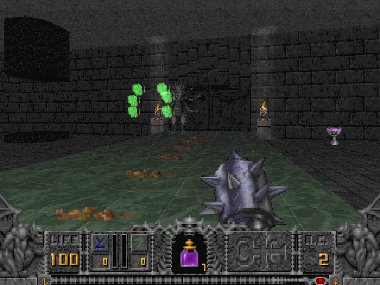

É um jogo de FPS com elementos fantasiosos publicado pela id Software e distribuído pela GT Interactive em 30 de outubro de 1995, da série Heretic/Hexen.
Hexen usa uma engine modificada do Doom II, e segue a história de Heretic, com os mesmos elementos inovadores (olhar para cima e para baixo e guardar artefatos no inventário), além de permitir a escolha de três classes para o seu personagem e a possibilidade de jogar em rede com até 8 pessoas. O jogo popularizou o uso do “hub system”, onde não há mais fases para serem passadas progressivamente (como em Doom e Heretic), e sim um mundo inteiro ligado em sub-mundos, onde o jogador pode tanto ir quanto voltar de qualquer lugar. O game também inovou muito além da engine de Doom e Heretic, tanto que o subtítulo do game é “Beyond Heretic” (Além de Heretic).
As três classes de personagem que podem ser escolhidas pelo jogador são as de guerreiro, clérigo e mago. Cada personagem pode carregar quatro armas no máximo, sendo a primeira (que é a mais fraca) com munição ilimitada, outras duas que são sustentadas por mana (que é um tipo de energia fantasiosa) e a quarta (que é a mais poderosa), que para ser obtida, necessita-se encontrar seus fragmentos espalhados pelo jogo. Há dois tipos de manas: as azuis e as verdes. Suas únicas funções são servir de ‘energia’ necessária para usar a(s) armas(s). As armas do guerreiro são as melhores para combate corpo a corpo. As do mago são as melhores para combate a longa distância. Já as do clérigo são as mais versáteis, pois são úteis tanto para corpo a corpo quanto para longa distância, mas com menos eficácia do que as específicas para tais funções.
AD
AD